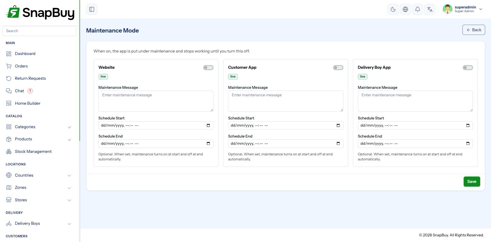
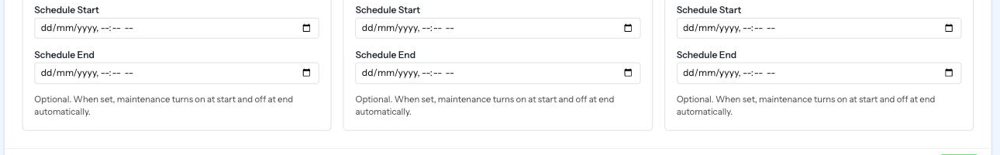

Maintenance Mode
Menu path: Settings → Maintenance
Takes a surface offline temporarily, showing customers a message instead of a broken store — for stock takes, migrations or upgrades.

Three independent surfaces
| Surface | Setting | Affects |
|---|---|---|
| Website | website_mode | The web portal |
| Customer App | app_mode_customer | The customer mobile app |
| Delivery Boy App | app_mode_delivery_boy | The rider app |
Each has its own switch and its own remark — the message shown while it is down.
Take down only what you need to
Upgrading the web portal does not require the apps to go offline. Keeping the apps live means orders continue while the website is down.
Putting the Delivery Boy App into maintenance stops fulfilment
Riders cannot see, accept or complete orders while their app is down. Orders already out for delivery cannot be marked delivered. Only do this when no orders are in flight.
The remark
Each surface's remark is the message customers read. Write something specific.
A good remark says what and when
"Back at 3 PM IST — we're upgrading our payment system" is reassuring. "Under maintenance" reads like the business has failed.
Scheduled maintenance windows
Rather than toggling by hand, set a start and end time. SnapBuy switches maintenance on at the start and off again at the end.

How the window behaves:
- Before the start time, nothing changes.
- At the start, the surface goes into maintenance.
- At the end, it comes back automatically.
- Once the window has fully passed, the schedule is cleared so a later manual toggle is not overridden.
Scheduled windows require the cron job
The switching is done by maintenance:apply, run every minute by the scheduler. Without the cron job, a scheduled window never starts — and, worse, one that started manually never ends.
Verify the cron heartbeat is green before scheduling anything.
Schedule times are stored in UTC
The panel converts from your local time when saving. If a window fires an unexpected number of hours out, check the timezone on the relevant country and the clock on the machine you scheduled from.
Planning a maintenance window
Pick your quietest hour, not the middle of the night
Check your order reports for the genuinely lowest-volume hour. It is often mid-afternoon rather than 2 AM, and being awake to fix a failed upgrade matters more than the last few orders.
Before starting:
- Confirm no orders are out for delivery, if the rider app is involved
- Take a database backup — see Backup Database
- Write a clear remark with an expected return time
- Confirm the cron heartbeat is green if using a schedule
- Have a way to verify the site yourself once it is back
Getting out of maintenance
Turn the switch off. It takes effect immediately.
Locked out with a scheduled window and no cron?
If a window turned maintenance on and the cron is not running, nothing will turn it off automatically. Toggle it off manually in the panel — the admin panel itself is never put into maintenance, so you can always reach it.
The admin panel is never affected
Maintenance applies to the customer-facing surfaces only. You can always sign in and administer the store while everything else is down.
Troubleshooting
| Symptom | Cause | Fix |
|---|---|---|
| Scheduled window did not start | Cron job not running | See Cron Job Setup |
| Maintenance will not turn off | Cron missing, window never consumed | Toggle it off manually |
| Window fired at the wrong time | Timezone mismatch | Check the country timezone |
| Customers still see the store | Cached pages or app state | Wait for the app to refresh; clear the storefront cache |
| Riders cannot complete deliveries | Delivery Boy App in maintenance | Turn that surface back on |
| No message shown, just an error | Remark left blank | Write a remark |